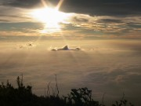

ただいま、金魚いっぱい救ってきましたｂ
満足した？
したっ！
で、詳細を書きたいところなんですがー
なんか海に行きたくなったので家族でキャンプに行ってきます。
遊びまくり
うぇへへ
詳細はまた、帰ってきてからって事でー
いってきまーす(･∀･)ﾉ))
はい、眠れないです。
不眠症とかじゃなくて、もう徹夜が癖みたいなもんですから。
眠れない夏の夜長に怪談を、、、じゃなくて
怖い話はいらん
じゃなくて
眠くなるようなDebianカーネルコンパイル失敗談でも。
-
とりあえず現在使ってるカーネルバージョンを調べてみます。
$ uname -a
Linux debian 2.6.8-2-386 #1 Tue Aug 16 12:46:35 UTC 2005 ; 686 GNU/Linux
わはは、インスコ完了した日付がもろに書き込まれているのかｗ
えー、とりあえずこれで詳細がわかった。 -
カーネルソースはどんなのがあるのかなって事で調べてみる。
# apt-cache search "^kernel-source"
…(略)
kernel-source-2.68-Linux kernel source for version 2.68 with Debian pathes
あー、もろにこれですね。間違いない(´σд`) -
んじゃ、必要なものをインスコしてゆきます。
カーネルはメタパッケージが存在したのでそれを指定すればおｋ。
その他にも必要な物があるらしいので、それらも一気にインストール。
いやーapt-getは簡単だわｗ
# apt-get install kernel-source-2.6.8 fakeroot kernel-package -
んで、"libncurses-dev"と"libqt3-mt-dev"ってのが"kernel-source-2.6.8"の提案パッケージだったのでこれもインスコ。
で、apt-getしたらば"libncurses-dev"には代替品が指定されていて、"libncuses5-dev"が代わりにインスコされた。
んでその推奨パッケージが"libqt3-compat_headers"だったのでこれもインスコ。
更に提案パッケージである"libqt3-i18n"と"qt3-doc"をもインスコ。
まだまだ入れます。
"libglade2-dev"を入れてその提案パッケージである"glade-2","glade-gnome-2"、でその推奨パッケージである"libgnomeui-dev","libgail-gnome-module"も追加インストール。
ここでglade2は削除されました。
で、あと
えーと
ああ
"libgnomeui-dev"の推奨パッケージである"orbit2"もインスコ。
これで準備完了です＿|￣|○ﾂｶﾚﾀ､､､(書くのに -
どうです。
そろそろ眠たくなってきたでしょうか？（ぁ
作業開始
-
カーネルサイズの確認。
どうせならサイズを小さくしてみようぜって事で、、、。
$ ls -l /boot/vmlinuz-2.6.8-2-386
-rw-r--r-- 1 root root 1.1M(1097554) 2005-08-17 00:14 /boot/vmlinuz-2.6.8-2-386
ほー…。1.1Mbかぁ、、、随分小さいな
俺が特に作り直さなくてもいいんじゃねーのか！？
いやいや
やる事に意義があるのだ。
否、単にやってみたいだけなのだ！ -
っと、まあ
景気良く方向性を見失ったところで、次の作業。
ホームディレクトリにsrcディレクトリを作成、ソースの展開。
$ cd
$ mkdir src
$ cd src
$ tar xjf /usr/src/kernel-source-2.6.8-2-386.ta.bz2 - えー、各オプションの日本語訳はLinux JF (Japanese FAQ) Project.を参照するとして。
-
~/src(/home/teva/src/kernel-package.2.6.8/)に移動。
んで
$ make-kpkg -
…ヴァー！わっかんねー！
俺のCPU正式名称なんだっけー！カーネルに組み込むべきオプションはどれだー！今の質問なんて読むのー！ちょ、ごめ、Fusion MPTってなんだｙふｊ：＠
ふぅ( ﾟ∞ﾟ)=3
こんだけ書いておきながらアレですけども、上記の手順は悪い例です。
なんでって、まず"kernel-package"自体の設定を
# kernel-packageconfig
でやってないし、カーネルパッケージの作成を行うユーザーとしてsrcグループに追加して再ログインしてないし
# adduser teva src
既存のカーネル設定ファイルをコピーしてきてラクをするって事をしてないし
$ apt-get source kernel-image-2.6.8-i386
…(略
$ cd kernel-image-2.6.8-i386-2.6.8/config
$ ls
386 686 686-smp default k7… ←（各CPU向けのカーネル設定ファイル）
$ cp 686-smp /usr/src/kernel-source-2.6.8/.config
コレを使って
$ make-kpkg --added-pathes debian --config menuconfig configure
みたいな感じだったのに…
途中から設定項目読むのめんどくさくなって、全部Return押して適当に進めて完成させちゃった(ﾟдﾟ)
本来なら"fakeroot"使って仮想root権限ユーザとしてdebパッケージを作るべきなのに。
不思議と完成しちゃったvmlinuzは2.9Mb
所有者はteva。所有権も755っつー無茶っぷり。
まともな設定もしていないし、vmlinuzなんてそのまんまのイメージ作っても、、、
どうやってインストールするんだよ！ヾ(`д´)ﾉｳﾞｫｹ
って事で割とあっさり廃棄。
お後がよろしいようで。
ちょんちょん
毎朝7時に寝て、19時に起きる生活。
それも一日だけじゃなくてもう5日続いている。
夜行性ここに極まれり候。
…まあある意味規則正しい生活なわけですがね(´σд`)
なんか間違っているんだけども。
現在Debianカーネルの再構築に挑戦中です。
目標は素敵なのにする事(何
よくわからないですねーそんなもんですよねー
また失敗談でも書きます（ぉ
えー、明日は全国金魚すくい大会予選です。
母と一緒に出場します。
目指せ！ハワイ旅行ーー(ﾟﾛﾟ)
感動。
MapleTowerクリアしました。
おもしろかったわー。
なんちゅうもんを、、、なんちゅうもんを作ってくれはったんやスナはん、、、。ﾟ ﾟ(ﾉД`)ﾟ ﾟ 。
思わず京都弁になっちまったぜえーいチクショー
いやー、まさかピーのピーにピーーーがピーとは思わなかったわぁ。
しかもピーーのピーーーには参ったわ。
悪魔や、悪魔のごっつあるー
もう最初から最後まで気が張り詰めっぱなし。
体勢整えるのをすっかり忘れてて、盗賊の篭手装備で挑んでたりね＿|￣|○
油断したら死ぬ。
ってか3回目でやっとこさ倒しました。
どうしようも無さそうな敵でも、テクニックでどーにかなるゲームバランスってのはやっていて非常に楽しいねぇ。
最強装備を揃えるだけで無敵モードなんてつまんないもんだし。
絶妙のバランスだ。最高。
調整とか、難しかったんだろうなあ。
でもその甲斐あってこんな素敵なもんになったわけだし。
うん。
お疲れ様スナ(´∀`)
ありがとう！
そして
Mayと言わずToと行こうぜっ（わかる人だけわかればよろしい
# クリア時の平均レベル ：Lv58（ってか全員
# プレイ時間 ：10時間15分
現在90階に到達。
ぜーはー。
び、びさす強い。
現時点でのプレイ時間は、7時間5分。
どんだけはまってるんだ俺は('∀`)うぇっうぇ
えー、引き続きMTROM-
きがつけば4時半。
ずーーーっとMapleTowerやってました('∀`)
スキルの覚え方とかSTPの振り方が面白くってねぇ
ほんとにSTPの振り様で頼りになる戦士に育ったり魔法剣士(忍者)みたいになったり殴り魔になったり（ぉ
しかしそれでもメイポみたいにキャラ育てなおしの必要も無いぐらいの絶妙なバランス。
殴り魔に育っちゃったら他のキャラでその殴り魔をサポートする様に育てればいいのだ。
回復役を一人に絞っちゃうとそいつが死んだり混乱したり沈黙したりするともうお手上げ。
だがしかし他が上手くサポートしてやれば、弱いところを皆でサポートするOne for all, All for Oneって感じで楽しめちゃうのね。
うわ、もうこれRPGじゃん。
ろーるぷれいんぐげーむじゃんっ(ﾉ∀`*)ﾉｼ))))ﾌﾞﾝﾌﾞﾝ
その中でも特にフリオニールがとても頼りになるのです。
だっしゃぁああ！
って感じで、ね(ﾉ∀` )ｂ
しかし戦士だけじゃあ成り立たず、逆に魔法使いだけでも成り立たず。
戦士をフォローする魔法使いと魔法剣士が絶対に必要なのだ。
持ちつ持たれつ。
えー、現時点で70階到達。
プレイタイムは5時間30分ジャスト。
段々敵がいやらしくなってきましたｗ
でも上手くやっていけばこれからどんな強敵でも倒していけんじゃねのっ！？ってゆー、このわくわくする気持ち。
(*´∀`)うひょひょひょ
楽しいわー。
それから皆さん見てくださいよ、これ。
れ、、、レウスレジストだと、、、
的確にファンのツボ突いてくるにくいアイテム。
(*´,д`)ﾊｧﾊｧ、、、
えー、ところで。
だだだだだだってゆーレナの必殺技ですが(何
えー。
これね。
MFブログのこのエントリーを見て以来、技名が「うおっまぶしっ」に思えてしゃーないのです＿|￣|○
ってかそうとしか思えなくなってしまっているのです＿|￣|○
どうしよう
鋭意製作中であったMapleTowerが完成しました！
うおおおお
遊ぶぞー攻略するぞーうひゃひゃひゃヾ(ﾟ∀ﾟ)ﾉ おもしれーー
下記バナーより飛び、「MT」とだけ書かれたぶっきらぼうなメニューよりどうぞ(何

えー、おとついになりますか。
さちょと伊勢までツーリング行ってきました。
目的地は以前お世話になったおきん茶屋。
アポ無しで突然の訪問。さぞかしばあちゃんも驚かれた事でしょう＾＾；えへ
道中は特に問題も無く、くそ暑い中快適に飛ばしてまいりました。
もー気持ちいいのなんのって。
寒くも無いしいい天気だしむしろ涼しいし。
バイクは素敵ですね。素敵です。
季節は夏真っ盛りといっても夜は夜でまた寒いもんです。
いい加減な格好で赴いたことを後悔するぐらい寒かったです。
みんな、バイクを舐めたらいかんよ！？
で、メイポ。
クアとヨンさんとブレイブパイレーツを狩りました。
プリがいるだけでこんなにもラクで楽しいもんかって事を思い知りました。
なんでSSが無いかっつと、保存する前に電源を切ってしまったからでーす＿|￣|○
えー特にオチはございません。
今日はただの日記に留まります。
おわり
このタイトルの日記が多い気がするけど気にしないっ(ﾟεﾟ)
今日は図書館に行って、風の谷のナウシカ上下を借りてきました。
あの、分厚い完全版のやつです。
これね →
総重量5kgは越えるとんでもねー漫画です。
まとめて読むには丁度いいですねｂ
でも、仰向けになって読むにはまったく適していません。
重みに耐えかねた俺の腕が悲鳴をあげ、2.5kgもある本が顔面めがけて襲い掛かります。
死ぬかと思った、、、('A`;)
良い子は真似しちゃだめだぞ星
で、もう一冊、これも借りてきました。
凝りもせずにこんな本ばっかし読んでます。
Solarisなんて環境、家には無いのにねー(´σд`)
でも、大好きなんです。こーゆー知識を取り入れるの。
んで調子に乗っちゃって、こないだDebianカーネルの再コンパイルにも挑戦しました。
バージョンネームはDebianを文字って"TEVIAN"
センスもへったくれも無いですね(´∀`)げへへ
そういえば最近、オリジナルLinuxを作ろう！って本をよく見かけるんですが(主に日経
開発環境がFedoraじゃないオリジナルLinuxを作ってみたい今日この頃。
なんでってあんた。開発のためだけにCD5枚分もダウンロード、インスコなんてやってらんねーもんよ(´σд`)
さーて、どうすっかねー
今晩は満月。
19:30-20:00ぐらいの月はすっごかったですね。
真っ赤でしかもとんでもなくでっかくて。
それは運転中に見つけたんですけど、その月が気になって気になってまったく集中出来ないのですｗ
「うわちょなんだあれすげーｓ…うをっあっぶねー！反対車線走ってんｊ…うひょーきれー」(何
こんな感じで危なっかしい帰り道でしたっと。
あー、図書館からの借りもんだけど、、、管理者ガイドの本欲しいなぁ。
でも\4500かぁ、、、ううむ。
ドラッグアンドドロップでドラゴンをぶん投げよう
注：Flashですよ。見れない方はActiveXをONにしてみてください。
俺を殺す気でしょうか太陽さん。
残暑見舞い申し上げます、どうもTEVAです。
あまりにも暑いので、戦士の故郷エルナスにて避暑と洒落込み、青ポのみで狩りをするとかゆー無茶をやってたらば、、、
ぢゅなさんがマナエリを届けに来てくれました(*´д`)
なんか怒ってる？ってなSSですが、これしかまともなの無かったんでｓ(#ﾟдﾟ)つ)д`)ﾌﾞﾊｯ・゜・。・゜゜・*:.。..。.:*・゜
もっともっと一緒に遊びたかったんですけどね、毎日20:30は我が家の飯時なので、名残惜しくも今回は落ち。
帰ってきてもう一度誘うも彼女はもう他人の物、、、(何
しゃーない、今回はこれで勘弁してやる('∀`)
またやろうねーって事で、次いきます。
深夜になちょとペットの移動速度が上がるクエストをやってきました。
アクアリウムにいるケンタってNPCから受けられるアレです。
MAP上に配置してある宝箱を壊してメモを5枚集めろってな奴なんですが、これがまためんどくさくてですねぇ。
途中からカムイさんも参加したんですけど、あまりの気だるさに途中ダウンｗ
俺となちょは半ば意地になって、なんとかクリアしました。
うおー愛しの源蔵ちゃんがすげー速度で付いて来るじゃあありませんかっ
これはペットをお持ちの方は是非やっておくべきですね、とか勧めておく。
って、ああ、、、！Σ(;´д`)
逃げろ源蔵ー！なちょが追いかけてくるぞー
っと、メイポ日記はこれでおしまい。
ここからはスナの助手として透過済素材を提供ヽ(ﾟ ∀,ﾟ)ﾉ
# zasa@png.7z 18.91kb
# kamui@png.7z 22.21kb
# dragon@png.7z 2.66kb
カムイさんの表情がF1なとこに、俺のエロさを感じますねー
ｵﾜﾘ
ちょっと前の話になるんですが、毎年恒例のPL花火に行ってきました。
高校1年の頃から行ってるから、えーと
おお、もう8年も通ってる事になるのか(;ﾟｪﾟ)
PL花火は高校時分、富田林に住む友達にその存在を教えもらったのがきっかけなんです。
それからは毎年、その子の家に泊りがけで遊びに行っていました。
んで、大学生になってからはさちょとｄ(ry
そして去年、今年とさちょ家の屋上から鑑賞という贅沢をしています。
富田林には不思議な縁がありますねぇ。
さちょの家に行き始めたのは上記の通り去年から。
それまで2年間は一般ピープル同様、大混雑の順路を通って見えるか見えないかわけわかんない会場まで必死で歩いて行って、暑いは見えないわちょっとでも立ち上がったら後ろから「立つんじゃねぇバカヤロウ」みたいな罵声を浴びせられて、だって俺も立たなきゃ前の人が立ってるから見えねーっつのバカヤロウ。なんだとこのバカヤロウ。うわごめんすいません調子乗ってしまってごめんなさいごめんなさいだからねえその手を降ろして降ろさないと俺もいい加減グーが出ちゃうかもしれないなぁ、ぉ？コラ？みたいな。
そんな刺すか刺されるか、女子供お兄ちゃんおっさんおばはんは引っ込んでろ！(全員かよ)みたいな一触即発の状態だったのに、今じゃ
「見ろ、人がゴミの様だ( ﾟ∀ﾟ)σ」
状態。
贅沢やわぁ。
えー。
PL花火の日にさちょ家に行くって事は、家族全員と親戚一同に会うって事なんですね。
うわ、ちょ、なにこのシチュエーション。うはおｋ緊張するヨロシー
とか、軽いパニック状態のさちょ
俺は別に、、、まあ緊張はするけれど人見知りじゃないし、そーゆーのもまたちょっと楽しみだったりして。
俺よりさちょと親父さんの方が緊張している、なんかわけわかんない空気になってたのが印象的でした。
うぇうぇ
えー、まあそれは置いといて、今年も行ってきました。
で、花火が綺麗でした。
さちょのイトコと仲良くなりました。
さちょの母が好きです(何
あと、えーと
ああ、飼い猫がかわいかったです。
それとなんだっけな。
えー…、ああ。
帰りはそのゴミの様な人達に紛れて帰りました。
ｵﾜﾘ
# リンク追加、NivisCusus君のブログ、「KIZUNA」
えー、ただいまです。
2006年07月27日 - 2006年07月29日の期間、富士山に登ってきました。
なんか、ちゃんと行き先告げてなかったみたいですね(･ω･ヾ
誰も行き先を知っていなかったとゆー、なんとゆーかその、ごめんなさい
…まあいいでしょう（ぉ
えー、親父とその友達と俺の三人で行ってきました。
静岡に行くんだから、スナのとこにも行きたいなーとか思ってたんですが、まあ
まさかそんな時間があるわけもなくて。ええ。
はよ行きたいなー
えー27日の晩は富士五合目にて就寝。
その晩は霧が凄くて、2M先も見えないぐらいの濃霧。
影絵とかして遊んでたんですけどね。
ちょっとライトを消すと、真の暗闇が訪れます。
こないだ地元で体験した暗闇なんか目じゃないぐらい。
星の光も、月の明かりも、街の灯も、何もございません。
深淵、Abyssです。
視覚がまったく役に立たず、頼りは聴覚とかそんなんだけ。流石にちょっと怖かったですね。
で、霧に向かって走ったりとかしてみたんですが、ホワイトアウトってのを体験しました。(ちょっと違うか
「うわー！上下左右わからんくなったー！」って(･ω･;)
凄かったです。
さて、車内にて5時間程仮眠を取ってAM3:00に出発。
ふと空を見上げると、、、すっかり霧が晴れてそこは満天の星空！
街の灯は届かないし、28日は新月だったこともあり、なんと天の川を見てしまいましたよっ
天の川とかっ初めて見たっ！ヾ(´∀`)ﾉ
すげーすげー！感動ーーーー！
登り始めて30分後、、、
はしゃぎすぎて疲れてしまいました(･ω･;)
やべぇ(ﾉд`)
先は長いのに、、、＿|￣|○
で、なんか明るくなってきたなーとか思ってると、父曰くそろそろ日の出の時間だといいます。
おお、夜行性の俺たちがいつも寝る時間じゃないｋ
それは御来光か！噂の御来光かっ！？
見たい、見たいぞぉお！
だって、「あーもう窓の外が明るいなー」とか、そんなレベルじゃありませんもんね！
神々しさが違う！違うぞおお 
いやーそれにしてもすごい。すごすぎる。
雲より高い場所ってすっごいですね！
ゼーハーゼーハー息切れして、ちょいと休憩と目を上げたら
そこは、、、
一面の雲海！！！！
すげーすげーー！世界が非現実的すぎるーー！ヾ(ﾟ∀、ﾟ)ﾉ
ここはもう森林限界をも越える植生限界だってさ！
なんだそれなんだそれー！うわ、すげ、いつの間にか周りに緑が無いーー！
すげーすｇ…ｹﾞﾎｯｹﾞﾎｯ
…ゼーハゼーハ…。
さ…酸素が薄いんです(ﾟдﾟ;)
あー本当にすごいとこだな、ここは。
何もかもが新鮮すぎる。
空気も新鮮だ。
なんてったって空気が薄いもんね！(高山病気味思考
そりゃ新鮮に決まってるがな！ウヒョーー…ｹﾞﾎｯｹﾞﾎﾎﾝ、ｸﾞﾌｯ
- 中略 -
登頂！ヾ(ﾟ∀。)ﾉ(何
御鉢巡りもしてきました。
途中の測候所が三角点らしくて、そこにも行きました。
これで俺は標高3776M地点に立つ事が出来たわけですね。
グヘヘ
で、これは富士火口の写真。
な、なんなんだこのスケールはっ
阿蘇草千里なんて目じゃないじゃんっ
嗚呼、日本一の山なんだなぁと実感。昇天。天国。転生。ただいまー
登りの所要時間は大体6時間半、でも下りはたった2時間で着いちゃうらしいんです。
なぜなら下りは登りみたいにゆるやかな道を通らなくてもいいわけですからね。
逆にちょっとぐらい急な方が速く進めちゃうわけです。
これを「砂走り」区間と言うらしいです。
なんでかっつとふかふかの深い砂の道を、ざっくざっくと大股で下って行く事が出来るからです！
こーれがまた楽しくてですねぇ。
「あーっはっはっはっはぁ！！」って笑いながら下る事が出来ちゃいますよｗ
自然と顔がほころんじゃいますよ。
なんか天国から下界へと降りていく道にも見えるしね。
こんな山があったのかーと普通に感動しますよ。
ところが
この砂走り区間は脚にものすっごい負担がかかるので、登りで溜まった疲労がここに来て遂に現れます。
実際俺も左膝がとんでも痛くなってしまい、左をかばいながら下っていたら右足まで痛くなってしまう始末。
両足が均等に痛くなっちゃもうどうしようも無いです。
大変だ、下山出来ない！
遭難しちゃうんですか？そうｎ(殴
親父とその友人さんに重い荷物を持ってもらい、必死に下ろうとしましたが無理です。
ほんとにもう両足が動かないの。ってか曲げられないのです＿|￣|○
「さーどうすっぺか」と悩んでいた俺は何を思ったか後向きに下り始めました。
お(ﾟﾛﾟ;)
これは中々ラクだぞ。
行ける、、、行けるぞ！
後ろ向きに下ると、膝を深く曲げる必要も無く、必要な筋肉も疲労の溜まった太もも前側ではなく裏側を使うことになるのでとても楽に下る事が出来るのです。
これは大発見。素晴らしい。スパシーボ！(違
っと、まー四苦八苦七転八倒しながらどーにかこーにか下山完了。
無事帰り着く事が出来ましたとさ。
最後に入った風呂の気持ちいいこと気持ちいい事！！
登山にはまっちゃいそうだわ。
親父、連れて行ってくれてありがとう。
そしてサポートしてくれて本当にありがとう
俺もまだまだ子供なんだなあと思った3日間でしたとさ。
ｵﾜﾘ


{kind=link}
{kind=link}
{kind=link}
{kind=link}
{kind=link}
{kind=link}
{kind=link}